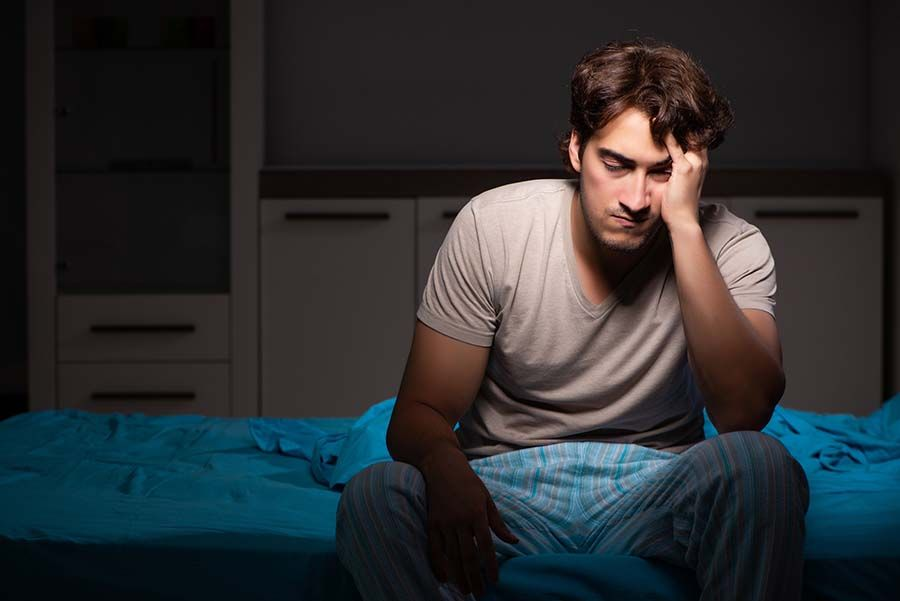

Se você abriu o TikTok ou o Instagram nos últimos meses, provavelmente esbarrou no "sleepmaxxing" — a febre de montar rotinas mirabolantes pra "hackear" o sono: fita na boca, luz vermelha, suplemento, temperatura do quarto, aplicativo que dá nota pro seu descanso. A promessa é rosto mais definido, mais energia, corpo melhor. Mas tem um lado dessa história que quase ninguém conta — e que interessa diretamente ao homem.
O que o sono tem a ver com testosterona
Aqui está o ponto que a maioria dos vídeos ignora: a maior parte da testosterona é produzida enquanto você dorme, principalmente nas fases de sono profundo. O pico do hormônio acontece de madrugada. Ou seja, dormir bem não é só descanso — é quando a fábrica hormonal do corpo masculino trabalha.
Quando o sono é curto ou picado, essa produção cai. Estudos mostram que restringir o sono a cerca de 5 horas por noite pode reduzir a testosterona em torno de 10 a 15% já em poucos dias — o equivalente a envelhecer alguns anos em termos hormonais, e isso em uma única semana mal dormida.
Traduzindo: aquela sequência de noites ruins não afeta só o seu humor no dia seguinte. Ela mexe com o hormônio que comanda libido, energia, massa muscular e disposição.
Por que isso explica a onda do sleepmaxxing
Não é coincidência que tanta gente esteja obcecada com sono justamente agora. Vivemos em um cenário de telas até tarde, estresse crônico e rotinas aceleradas — a combinação perfeita para dormir mal. E, como já se sabe que os níveis de testosterona na população vêm caindo ao longo das décadas, o corpo está dando sinais: cansaço, queda de libido, dificuldade de concentração.
O sleepmaxxing, no fundo, é a reação a isso. O problema é que ele mistura coisas que funcionam com puro marketing.
O que realmente funciona (e o que é hype)
Separando o joio do trigo, com base no que a ciência do sono realmente mostra:
- Funciona de verdade: horário regular para dormir e acordar (inclusive no fim de semana), quarto escuro e fresco, reduzir telas e luz forte nas 1-2 horas antes de dormir, evitar álcool e cafeína à noite.
- Pode ajudar, com moderação: magnésio em alguns casos, controle de ruído.
- Muito hype, pouca evidência: fita na boca, dezenas de suplementos "milagrosos", obsessão com a nota do aplicativo de sono — que pode até gerar mais ansiedade e piorar o sono.
A base é surpreendentemente simples: regularidade e escuro batem qualquer gadget caro. Consertar o horário faz mais pela sua testosterona do que qualquer pó comprado pela internet.
Um alerta importante: ronco alto e sonolência durante o dia podem indicar apneia do sono — uma condição que derruba a testosterona e exige avaliação médica, não suplemento.
Quando o problema pode ser hormonal
Se mesmo dormindo melhor você segue com fadiga, queda de libido, perda de massa muscular ou desânimo persistente, vale investigar de verdade. Esses sintomas podem estar ligados à testosterona baixa — mas também têm outras causas (obesidade, apneia, estresse, tireoide). Só exames e avaliação médica conseguem dizer.
E um recado direto: não saia repondo testosterona por conta própria, com base em vídeo de internet. A reposição sem indicação tem riscos reais, incluindo impacto na fertilidade. Muitas vezes, ajustar sono e estilo de vida já recupera os níveis naturalmente — e, quando a reposição é necessária, ela é feita com acompanhamento, não por automedicação.
A mensagem que fica
O sleepmaxxing acertou em uma coisa: sono é saúde, não luxo. Para o homem, é mais do que isso — é o horário de trabalho da sua testosterona. Você não precisa de um quarto cheio de gadgets. Precisa dormir de forma regular, no escuro, o suficiente. E, se o corpo continuar dando sinais, procurar quem investiga a causa de verdade.
Perguntas frequentes